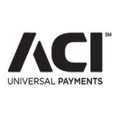

Software Engineer
with a zeal for design
Hi, I'm Tanmay and I like to build
Timeline
-
April 2014 - PresentSoftware EngineerDeveloping UIs with rich front-end components for the Universal Payments Framework using ExtJS and governing the visual changes to these components to ensure they match the ACI Style Guide
-
February 2013 - March 2014Associate Software EngineerDesigned and implemented a CSS hierarchy spanning across the Universal Payments Framework and crafted an ACI based universal theme for all web apps by working with the UXD/VizD teams
-
September 2010 - Decemeber 2012Master of Science in Computer ScienceCompleted my masters with a 3.66 GPA and a specialization in HCI. Recepient of the Dean’s Scholarship. Orientation Leader for the International Student and Scholar Institute at Northeastern University.
-
May 2012 - August 2012Web Design InternDesigned and developed an internal Sharepoint website for the Design Compliance Engineering team. Conducted usability sessions, created paper prototypes and translated these prototypes into a fully functional website.
-
June 2011 - December 2011Application Support EngineerProvided tech support to customers via phone and email focusing on MATLAB Deployment/API. Assisted engineers in Europe and Asia as a world-wide support engineer and oversaw the activities in the Deployment/API team as a group leader.
-
August 2006 - May 2010Degree in Bachelor of EngineeringCompleted my bachelors degree majoring in Information Technology. Recepient of the J.R.D Tata Trust Grant. H.R. Head for the student council and Creative Director for the IEEE council at Rajiv Gandhi Institute of Technology.